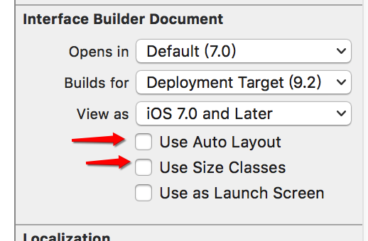
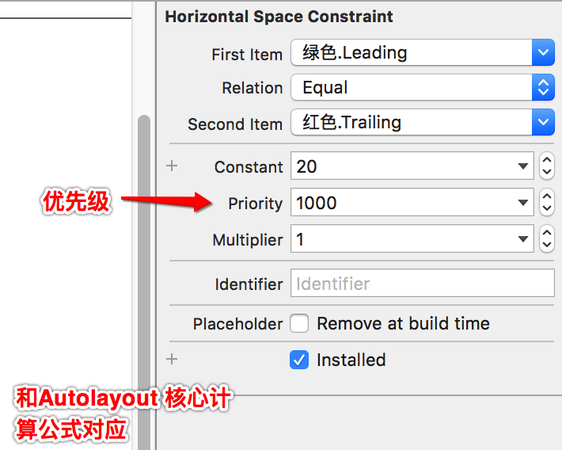
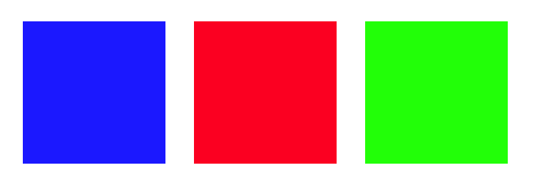
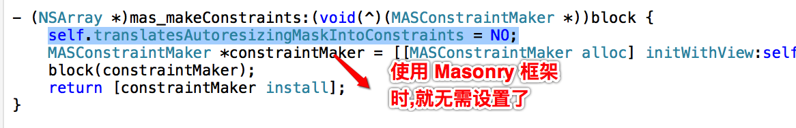
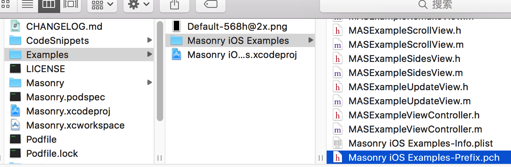

获取屏幕宽度
以前为了适配屏幕宽度,可能会这样处理:
#define ScreenW [UIScreen mainScreen].bounds.size.width
#define ScreenH [UIScreen mainScreen].bounds.size.height
// 创建一个显示在屏幕右下角的按钮
CGFloat buttonW = 100;
CGFloat buttonH = 50;
button.frame = CGRectMake(ScreenW - buttonW, ScreenH - buttonH, buttonW, buttonH);
Autoresizing
与 Autolayout 对比:
- Autoresizing仅仅能解决子控件和父控件之间的相对关系问题
- Autolayout解决任何控件之间的相对关系问题
使用前,需要将 Auto Layout 设置为 no 
autoresizingMask:设置自动调整- UIViewAutoresizingFlexible
LeftMargin- 距离父控件的左边是可以伸缩的
- UIViewAutoresizingFlexible
BottomMargin- 距离父控件的底部是可以伸缩的
- UIViewAutoresizingFlexible
RightMargin- 距离父控件的右边是可以伸缩的
- UIViewAutoresizingFlexible
TopMargin- 距离父控件的顶部是可以伸缩的
- 距离父控件的顶部是可以伸缩的
- UIViewAutoresizingFlexible
Height- 高度跟随父控件的高度进行伸缩
- UIViewAutoresizingFlexible
Width- 宽度跟随父控件的宽度进行伸缩
- UIViewAutoresizingFlexible
例子:
UIView *redView = [[UIView alloc] init];
redView.backgroundColor = [UIColor redColor];
CGFloat redViewX = self.view.frame.size.width - 100;
CGFloat redViewY = self.view.frame.size.height - 100;
redView.frame = CGRectMake(redViewX, redViewY, 100, 100);
redView.autoresizingMask = UIVeiewAutoresizingFlexibleLeftMargin |
UIViewAutoresizingFlexibleTopMargin |
UIViewAutoresizingFlexibleWidth;
Autolayout
核心概念
约束:通过给控件添加约束,来决定控件的位置和尺寸参照:在添加约束时,是依照谁来添加(可以是父控件或者兄弟控件)
代码实现 Autolayout 时的注意点:
要先禁止autoresizing功能，设置view的下面属性为NO
view.translatesAutoresizingMaskIntoConstraints = NO;- 不用再给view设置frame
Autolayout 的核心计算公式:
obj1.property1 =（obj2.property2 * multiplier）+ constant value
注意:
优先级默认是1000.
案例:通过 Autolayout 实现动画时候,如果删除中间的那个,第3个向第1个靠拢,则需要设置第3个和第1个的间距,并调小优先级 仅作了解
添加约束的规则对于两个同层级view之间的约束关系，添加到它们的父view上

对于两个不同层级view之间的约束关系，添加到他们最近的共同父view上

- 对于有层次关系的两个view之间的约束关系，添加到层次较高的父view上

VFL- Visual Format Language, 可视化格式语言
- VFL是苹果公司为了简化Autolayout的编码而推出的抽象语言
有了 Autolayout 的 UILabel- 在没有Autolayout之前，UILabel的文字内容总是居中显示，导致顶部和底部会有一大片空缺区A域

- 有Autolayout之后，UILabel的bounds默认会自动包住所有的文字内容，顶部和底部不再会有空缺区域

- 在没有Autolayout之前，UILabel的文字内容总是居中显示，导致顶部和底部会有一大片空缺区A域
基于Autolayout的动画
在修改了约束之后，只要执行下面代码，就能做动画效果(约束)
[UIView animateWithDuration:1.0 animations:^{ [添加了约束的view的父控件 layoutIfNeeded]; }];例子:
- (void)touchesBegan:(NSSet<UITouch *> *)touches withEvent:(UIEvent *)event { // 修改约束 self.redViewWLc.constant = 50; [UIView animateWithDuration:2.0 animations:^{ // 强制刷新 [self.view layoutIfNeeded]; }]; }
Masonry 框架
目前最流行的Autolayout第三方框架
无需禁止autoresizing功能,因为它已经帮我们做好了 
使用的时候,一般都要引入宏:
//define this constant if you want to use Masonry without the 'mas_' prefix #define MAS_SHORTHAND //define this constant if you want to enable auto-boxing for default syntax #define MAS_SHORTHAND_GLOBALS查找位置:Examples/Masonry\ iOS\ Examples/Masonry\ iOS\ Examples-Prefix.pch  说明:
#define MAS_SHORTHAND
默认,使用属性时,都需要加上mas_属性,比如:mas_width,引入#define MAS_SHORTHAND宏之后, 可以简写为: width#define MAS_SHORTHAND_GLOBALS
- 默认情况下
- mas_equalTo有自动包装功能，比如自动将20包装 为@20
- equalTo没有自动包装功能
- 添加了#define MAS_SHORTHAND_GLOBALS 宏之后,mas_equalTo和equalTo就没有区别了
- 默认情况下
注意:
要使用宏使,必须在引入#import "Masonry.h"之前添加
可有可无的用法:只是为了提供阅读性
- (MASConstraint *)with { return self; } - (MASConstraint *)and { return self; }